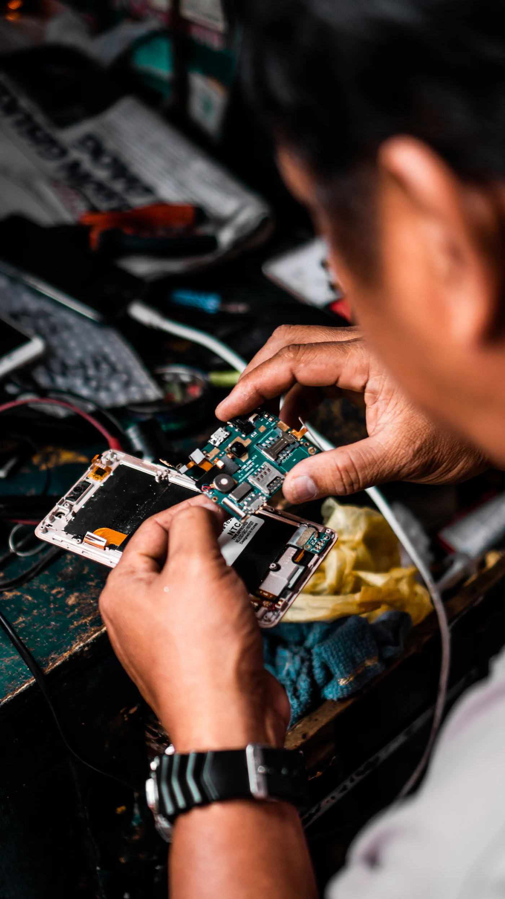
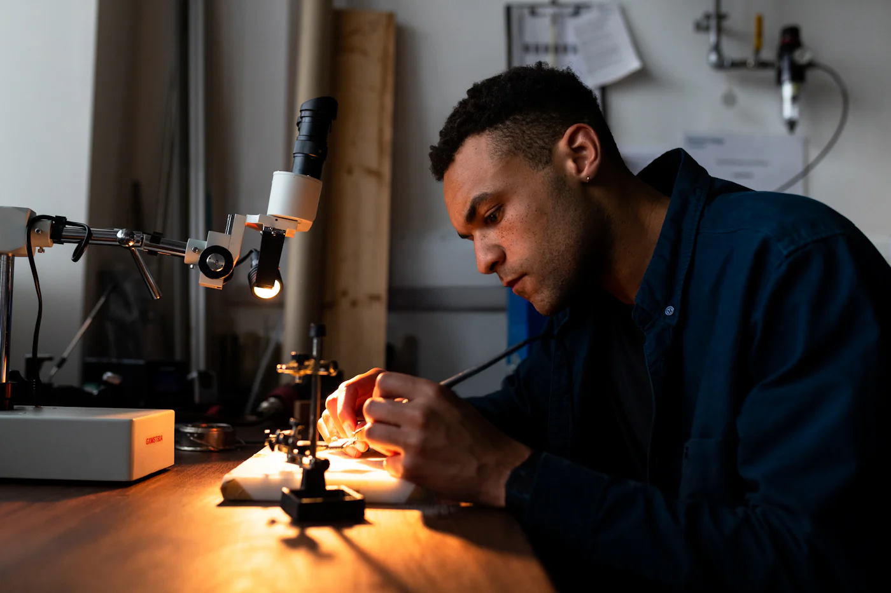
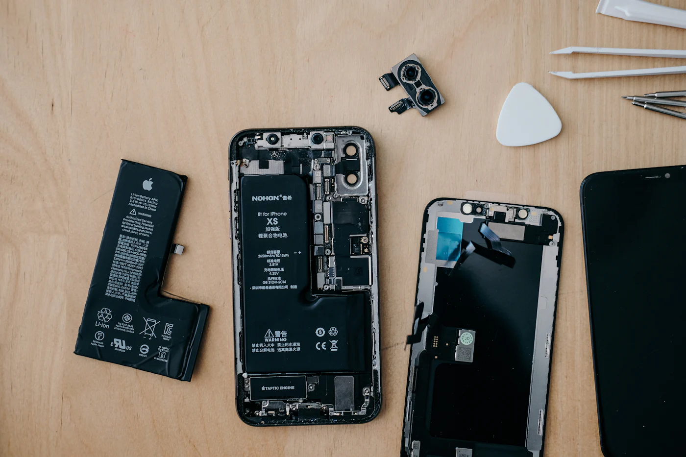
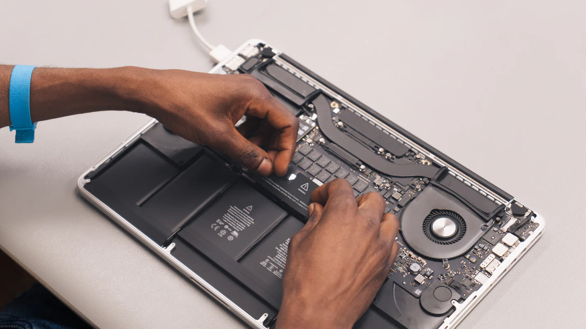
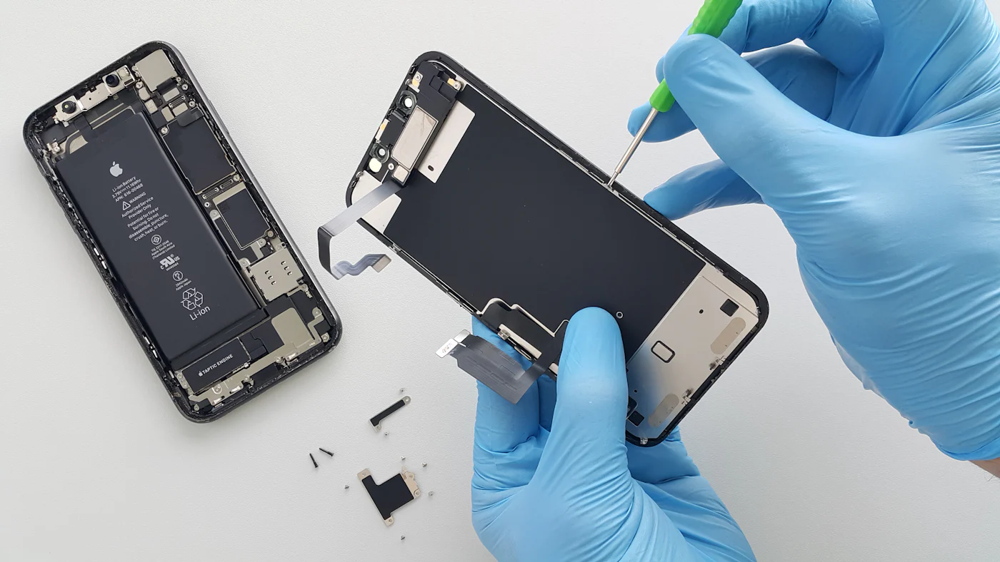

TELEFON · LAPTOP · TABLET · NYOMTATÁS
Mondja meg, mi a baja.
Mi megmondjuk, mennyi és mikorra.
Ár és határidő még azelőtt, hogy bejönne. A bevizsgálás ingyenes, ha nálunk javíttatja, és a munkalapszámmal bármikor megnézheti, hol tart.

Árbecslés
Hol tart a javítás?
Írja be a munkalap számát. Kipróbálhatja ezekkel:

Nyomtatás, fénymásolás
Szakdolgozat, menetrend, plakát. E-mailben küldje, mire beér, kész.
Csavar Szerviz
Győr, Baross Gábor út 31. · hétfőtől péntekig 9–18


